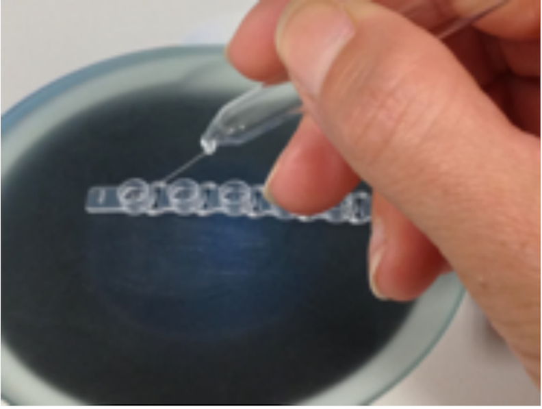

C. elegans Lysis PCR
Materials
- 2X Lysis Buffer
- 20 mg/mL Proteinase K
- PCR Strip Tubes and Caps
- Thermocycler
- Minicentrifuge
- GoTaq DNA Polymerase (Promega, Cat.# M3005)
- 5X GoTaq Buffer (Green or Colorless)
- dNTP Mix (10 mM)
- Primer pair for gene target (10 μM)
- Nuclease-free water
Protocol
-
Prepare lysis solution by combining 98 μL of 2X Lysis Buffer (recipe below) with 2 μL of 20 mg/mL Proteinase K (PK).
a. Prepare enough lysis solution for the number of lyses you want to carry out (6 μL per reaction).
-
Aliquot 6 μL of the lysis solution into each cap of an 8-tube strip cap.
-
Pick desired number of worms into each cap (3-5 worms per cap is recommended).
a. Take care to not transfer too much bacteria to the lysis buffer when removing worms from the pick. Bacteria will inhibit the downstream PCR reaction. You can watch the pick in the cap through the microscope to make sure the worms come off and to monitor the transfer of bacteria.

-
Place the caps onto an appropriately labeled strip of tubes. Spin down the worms into the 8-strip tube using the minicentrifuge.
-
Turn on the thermocycler.
-
While the thermocycler is preheating, place your strip tubes into the frost in the -80°C freezer.
-
Run the following program on a thermocycler (Lid set to 105°C):
| Time | Temperature | Cycles |
|---|---|---|
| 1 hour | 60°C | 1 |
| 15 min | 95°C | 1 |
| Hold | 6°C | 1 |
-
When there is ~20 minutes left on the lysis, assemble your PCR master mix on ice according to the table below:
a. Make enough master mix for the number of reactions you need plus 1 additional reaction (e.g. if you need to complete 8 reactions, make enough master mix for 9 reactions)
b. If using a polymerase other than GoTaq DNA polymerase, confirm the reagent volumes, concentrations, and cycling parameters for the specific polymerase being used.
| Constituent | Stock | Volume Per Rxn | Final |
|---|---|---|---|
| Nuclease-free H2O | - | 9.4 μL | - |
| 5X GoTaq Buffer | 5X | 4 μL | 1X |
| dNTPs | 10 mM | 0.4 μL | 0.2 mM |
| Forward Primer | 10 μM | 2 μL | 0.1 μM |
| Reverse Primer | 10 μM | 2 μL | 0.1 μM |
| GoTaq Polymerase | - | 0.2 μL | - |
| TOTAL | - | 18 μL | - |
-
Add 18 μL of master mix to each tube and keep on ice until the lysis is completed.
-
When the lysis reaction is complete, add 2 μL of the lysis to each corresponding PCR tube containing master mix. Keep the reactions on ice until the thermocycler is preheated.
-
Run the following program on a thermocycler:
| Time | Temperature | Cycles |
|---|---|---|
| 2 min | 95ºC | 1 |
| 30 s 30 s 1 min2 |
95°C Tm - 5ºC (42-65°C)1 72°C |
35 |
| 5 min | 72ºC | 1 |
| Hold | 6°C | 1 |
1 Annealing temperature is primer pair specific and must be modified accordingly.
2 An extension time of 1 min/kb is recommended. Cycling parameters may need to be adjusted depending on the length of the target being amplified.
Recipe for 2X Lysis Buffer
| Constituent | Amount | Final |
|---|---|---|
| KCl | 0.745 g | 100 mM |
| Tris (pH 8.2) | 0.24 g | 20 mM |
| MgCl2 | 0.047 g | 5 mM |
| IGEPAL | 900 μL | 0.9% |
| Tween 20 | 900 μL | 0.9% |
| Gelatin | 20 mg | 0.02% |
-
Add water to 100 mL
-
Note: Tween 20 and IGEPAL are difficult to pipette, so you may choose to make a 50% solution in water and double the input amount.